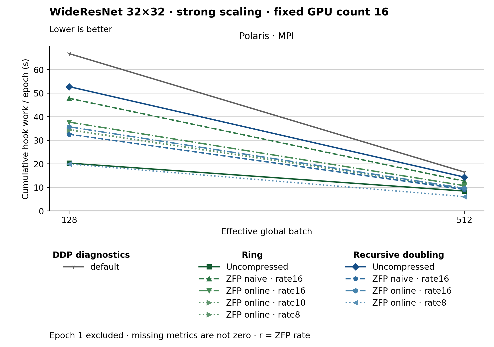

The figure uses lines. Methods use colors, line styles and markers. The metric is Cumulative hook work / epoch (s). Polaris · MPI, Effective global batch 128: Recursive doubling · ZFP online · rate8 has the lowest plotted value, 19.932. Polaris · MPI, Effective global batch 512: Recursive doubling · ZFP online · rate8 has the lowest plotted value, 6.104. Epoch 1 is excluded. Values are medians; when repeated runs are available the selected repeat policy is median. These are not confidence intervals across repeated jobs. Missing or unrecorded metrics are omitted, not set to zero. Hook work is cumulative instrumented work; it can overlap and is not an additive wall-time partition.
| Panel | Effective global batch | Method | Value | Runs |
|---|---|---|---|---|
| Polaris · MPI | 128 | default | 66.75008 | 1 |
| Polaris · MPI | 128 | ring | 20.292295 | 1 |
| Polaris · MPI | 128 | ring_zfp_naive:16 | 47.797568 | 1 |
| Polaris · MPI | 128 | ring_zfp_online_coll:16 | 37.693503 | 1 |
| Polaris · MPI | 128 | ring_zfp_online_coll:10 | 34.546013 | 1 |
| Polaris · MPI | 128 | recursive_doubling | 52.742608999999995 | 1 |
| Polaris · MPI | 128 | recursive_doubling_zfp_naive:16 | 32.539801 | 1 |
| Polaris · MPI | 128 | recursive_doubling_zfp_online_coll:16 | 35.713612999999995 | 1 |
| Polaris · MPI | 128 | recursive_doubling_zfp_online_coll:8 | 19.932492 | 1 |
| Polaris · MPI | 512 | default | 16.509728 | 1 |
| Polaris · MPI | 512 | ring | 8.449901 | 1 |
| Polaris · MPI | 512 | ring_zfp_naive:16 | 12.653045 | 1 |
| Polaris · MPI | 512 | ring_zfp_online_coll:16 | 10.74941 | 1 |
| Polaris · MPI | 512 | ring_zfp_online_coll:10 | 9.598635 | 1 |
| Polaris · MPI | 512 | recursive_doubling | 14.367004000000001 | 1 |
| Polaris · MPI | 512 | recursive_doubling_zfp_naive:16 | 9.138272 | 1 |
| Polaris · MPI | 512 | recursive_doubling_zfp_online_coll:16 | 9.621084999999999 | 1 |
| Polaris · MPI | 512 | recursive_doubling_zfp_online_coll:8 | 6.103761 | 1 |
| Polaris · MPI | 128 | ring_zfp_online_coll:8 | 34.346201 | 1 |
| Polaris · MPI | 512 | ring_zfp_online_coll:8 | 9.463517 | 1 |